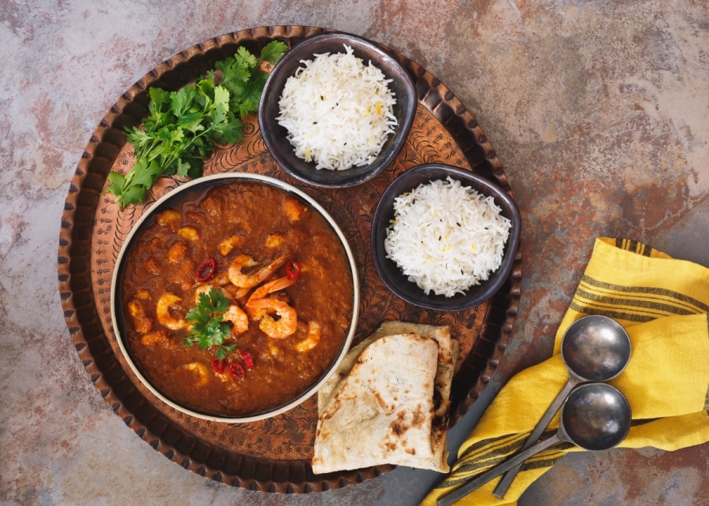

Guyanese Shrimp Curry
- Author: Stephen Rollins
- Prep Time: 20 Minutes
- Cook Time: 30 Minutes
- Total Time: 50 minutes
- Serves: 3-4
- Category: Main Dish
- Method: Stovetop
- Diet: Carnivore
Guyanese Curry!
Guyana is a small country to the west of Brazil. Most people know very little about it, but it is a beautiful place where fruit grows everywhere and the people are as wonderful as the food (which is wonderful). It was originally a British and Dutch colony that was used as part of the trade routes through the Caribbean. As a result, the people who live there are mostly from India and Africa originally, but there are local Amer-Indian tribes that have been there for hundreds of years. Coincidentally, they have some of the most amazing curry that has ever been created. It is a combination of Indian yellow curry, African spices and Caribbean flare. Today I’m going to teach you to make Guyanese Shrimp Curry.
The Curry Itself
There world is full of many types of Curry, some are vegan, some are spicy. Many of my frineds have said that theirs is the best curry you’ll ever have. Regardless of what people, say Caribbean curry is by far my favorite. I have found the best curries usually have a touch of spiciness to them and are flavor packed! So that is what I’m going to teach you! The heart of any curry is in its beginnings, the base will determine if it is an amazing curry or a blahse one. So, no shortcuts and take all the recommendations I give. I promise they will give the curry that kick you’re looking for. This curry is best with roti which is a variety of flat Indian bread, but it also goes well with rice or naan bread.
Ingredients:
Green Seasoning
Green seasoning is an essential part of many dishes in Guyana! It’s a paste you make to add in at the right time to give that flavor a massive bump. It usually consists of garlic, green onion, vinegar, salt and, young celery. You keep it in a bottle in the fridge and pull it out when you need it. Not a bad idea really.
Dry Seasoning
There is a Holy Trinity of spices in Guyanese Curry, and they are fairly crucial to the success of the dish, so it’s a good idea to purchase high quality. I recommend going to an ethnic grocery store for these or ordering them online. The brand I use is Indi, it has a stylized elephant on the front. The Holy Trinity of spices that I spoke of earlier are Curry powder, Garam Masala powder and Jeera powder (ground cumin seed).
Green Seasoning
- 5-6 cloves Garlic
- 1 small Yellow Onion
- 5 whole socks of Green Onion
- 1 bundle of young celery
- 1 Tbs Vinegar
- 1 tsp Salt
The Paste
- 3 Tbs Curry Powder
- 3 Tbs Garam Masala
- 1 Tbs Jeera (ground Cumin seed)
- 3 Tbs Chicken seasoning
- 2 Tbs Seafood seasoning
- 2 Chicken Bouillon cubes
- 2 Chicken/Tomato Bouillon cubes
The Meat of the Meal
- 2 lbs. peeled Shrimp
- 5 Green Onions
- 1 to 1/3 bulb of Garlic
- 1 medium Onion
- 2-3 spicy peppers (Thai Chilis or Serrano’s)
- 2 Roma Tomatoes (Ripe)
- 1 Tbs Tomato paste
- ½ cup vegetable or Canola oil
Instructions:
Food Prep
- Making the green seasoning is simple, take all the veggies (from the Green Seasoning list) and chop finely, as fine as possible. It is best if you use a food processor or a mortar and pestle, and can grind it to pulp, but chopping it into a rough paste will work as well. Add salt and add vinegar if you plan on storing the rest of the green seasoning long term.
- Dice your veggies separately and have a bowl or container for each one.
- In a separate bowl add the Holy Trinity and all the dry seasonings together. Next begin to slowly add a couple of tablespoons of water at a time, stopping to stir it into the paste of dry seasonings. You want a smooth paste, but not watery.
- Add oil to the pan and heat to a medium high heat. You’ll know it’s ready when it’s just beginning to smoke. While waiting, wash the shrimp.
Note: If you’re making rice now is the time to start it!
The Dish
- When the oil is ready, drop in the paste of dry seasonings. It will be hot and foaming, but you have to watch it. Make sure it doesn’t start to clump up and burn. To prevent this, add small amounts of water as needed. Cook for 5 minutes. You also will want to turn on your vents and maybe even crack a window or two.
- Add the tomato paste and veggies to the oil. Stir and cook for 5 minutes.
- Add the shrimp, three tablespoons of green seasoning, as well as the cubes of bouillon and stir everything well together.
- This next part is called Bunjah! It means to let the flavors simmer. So let everything bunjah for eight to ten minutes maybe turn down the heat a tad.
- Add the cubed tomatoes and let it simmer for 2 more minutes while you stir them in.
- Remove from the heat and let stand for 5 minutes, you’re done! Serve with rice, roti or naan!